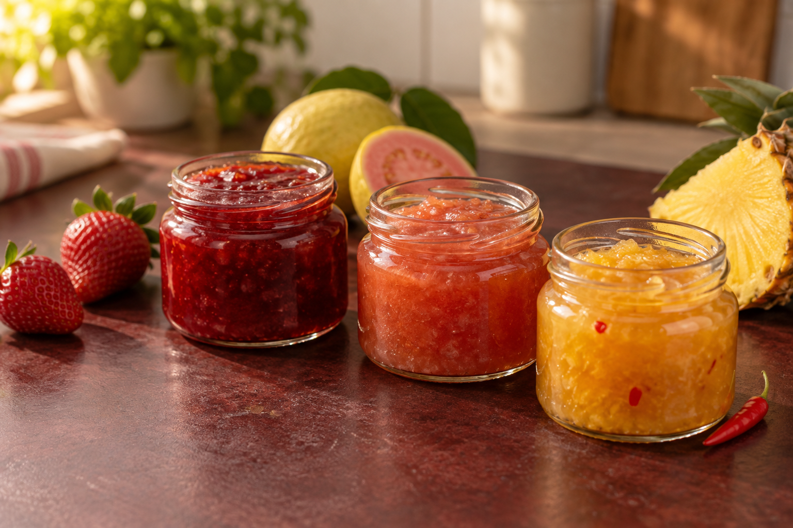

Sua primeira linha
Três geleias para começar
Escolha um sabor e siga a receita sem complicação.

Passo 1 de 3
0 de 3 feitas
Escolha a primeira receita
Passo 2 de 3
Descubra o custo por pote
Custo aproximado por pote
R$ 7,58
Comece testando um preço entre R$ 15,20 e R$ 18,95.
Passo 3 de 3
Veja sua primeira linha
Marque uma receita como feita para adicioná-la à sua linha.